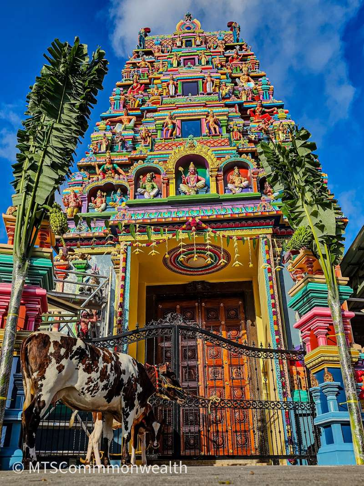
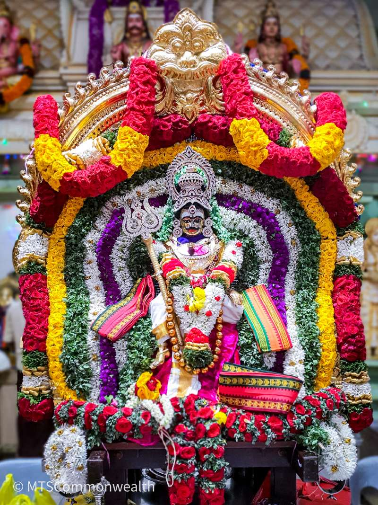

Sri Muneeswaran Hindu Temple, considered to be the largest shrine in Southeast Asia dedicated to Sri Muneeswaran, is situated on the Tanglin Halt Road at Commonwealth Drive Singapore. The grand temple gets its name from the merging of the two words: 'muni' meaning 'saint', and 'ishwar', signifying 'god'. Along with the presiding deity, Sri Muneeswaran Temple also includes the idols of several well-known Hindu gods like Lord Vinayagar, Sri Durgai Amman, Sri Ayappan, Sri Krishna and Sri Mariamman, to name a few. It is also said to be the only temple in Singapore to house the deities of Sri Naga Raja and Rani.
Interestingly, Sri Muneeswaran is said to be the God of acting and the protector of the South Indian villages. Several local actors offer their prayers at this temple since it is a strong belief that worshipping Sri Muneeswaran will improve one's acting skills. The dignified temple was originally a shrine built by the Malayan railway workers at Queensway in 1932 in order to worship the deity. In 1998, it was relocated to Tanglin Road where it stands till date. Apart from being a place of worship, Sri Muneeswaran Temple also holds counselling and matchmaking sessions and doubles as a free yoga centre on Sundays and Mondays.
The management committee of the temple also offers food to the needy in and around this place, irrespective of race and age. Not only is this sacred temple visited by numerous visitors throughout the year, but it is also believed to specifically draw in worshippers who are transformed criminals. Devotees flood in large crowds from distant places to pay their offerings and connect to their spiritual selves.


ஸ்ரீ முனீஸ்வரன் இந்து கோயில், சிங்கப்பூர் தென்கிழக்கு ஆசியாவில் ஸ்ரீ முனீஸ்வரனுக்கு அர்ப்பணிக்கப்பட்ட மிகப்பெரிய ஆலயமாகக் கருதப்படும் ஸ்ரீ முனீஸ்வரன் கோயில், காமன்வெல்த் டிரைவ் சிங்கப்பூரில் உள்ள டாங்லின் ஹால்ட் சாலையில் அமைந்துள்ளது. 'புனிதர்' என்று பொருள்படும் 'முனி' மற்றும் 'கடவுள்' என்று பொருள்படும் 'இஷ்வர்' ஆகிய இரண்டு சொற்களின் கலவையிலிருந்து இந்த பிரம்மாண்டமான கோயில் அதன் பெயரைப் பெற்றது. தலைமை தெய்வத்துடன், ஸ்ரீ முனீஸ்வரன் கோவிலில் விநாயகர், ஸ்ரீ துர்கை அம்மான், ஸ்ரீ அய்யப்பன், ஸ்ரீ கிருஷ்ணா மற்றும் ஸ்ரீ மாரியம்மன் போன்ற பல நன்கு அறியப்பட்ட இந்து கடவுள்களின் சிலைகளும் உள்ளன.
சிங்கப்பூரில் ஸ்ரீ நாகா ராஜா மற்றும் ராணியின் தெய்வங்களை வைத்திருக்கும் ஒரே கோயில் இதுவாகும் என்றும் கூறப்படுகிறது. சுவாரஸ்யமாக, ஸ்ரீ முனீஸ்வரன் நடிப்பின் கடவுள் மற்றும் தென்னிந்திய கிராமங்களின் பாதுகாவலர் என்று கூறப்படுகிறது. ஸ்ரீ முனீஸ்வரனை வழிபடுவது ஒருவரின் நடிப்புத் திறனை மேம்படுத்தும் என்ற வலுவான நம்பிக்கை இருப்பதால் பல உள்ளூர் நடிகர்கள் இந்த கோவிலில் தங்கள் பிரார்த்தனைகளை வழங்குகிறார்கள். கண்ணியமான கோயில் முதலில் 1932 ஆம் ஆண்டில் குயின்ஸ்வேயில் மலாய் ரயில்வே தொழிலாளர்களால் தெய்வத்தை வழிபடுவதற்காக கட்டப்பட்ட ஒரு கோயிலாக இருந்தது. 1998 ஆம் ஆண்டில், இது டாங்லின் சாலைக்கு மாற்றப்பட்டது, அங்கு அது இன்றுவரை உள்ளது.
வழிபாட்டுத் தலமாக இருப்பதைத் தவிர, ஸ்ரீ முனீஸ்வரன் கோயில் ஆலோசனை மற்றும் மேட்ச்மேக்கிங் அமர்வுகளையும் நடத்துகிறது மற்றும் ஞாயிற்றுக்கிழமைகள் மற்றும் திங்கட்கிழமைகளில் இலவச யோகா மையமாக இரட்டிப்பாகிறது. கோயிலின் நிர்வாகக் குழுவும் இனம் மற்றும் வயதைப் பொருட்படுத்தாமல் இந்த இடத்திலும் அதைச் சுற்றியும் உள்ள தேவைப்படுபவர்களுக்கு உணவை வழங்குகிறது. இந்த புனித கோயிலை ஆண்டு முழுவதும் ஏராளமான பார்வையாளர்கள் பார்வையிடுவது மட்டுமல்லாமல், மாற்றப்பட்ட குற்றவாளிகளாக இருக்கும் வழிபாட்டாளர்களை இது குறிப்பாக ஈர்க்கும் என்றும் நம்பப்படுகிறது. பக்தர்கள் தங்கள் பிரசாதங்களை செலுத்துவதற்கும், தங்கள் ஆன்மீகத்துடன் இணைவதற்கும் தொலைதூர இடங்களிலிருந்து பெரும் கூட்டத்தை திரட்டுகிறார்கள்.
Copyright © SRI MUNEESWARAN TEMPLE. All Right Reserved.